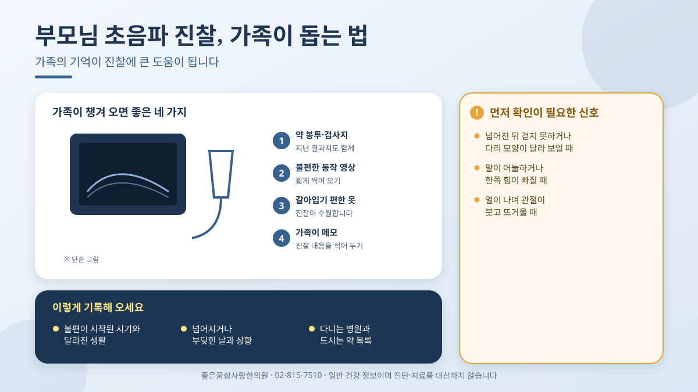

이종호 한의사 감수좋은꿈참사랑한의원 대표원장 (한의사 면허번호 19769)발행 2026-11-23 · 수정 2026-11-25
이 글의 차례
연세 드신 부모님이 초음파 진찰을 받으실 때 가족이 가장 크게 도울 수 있는 일은 언제부터 어떤 동작을 불편해하셨는지, 드시는 약과 지난 검사 결과, 최근 넘어진 일을 정리해 오는 것입니다. 상도동에 사시는 부모님을 모시고 오는 자녀분들이 많습니다. 어르신은 불편을 줄여 말씀하시거나 날짜를 헷갈리시는 경우가 있어 가족의 기억이 큰 도움이 됩니다.
초음파는 필요하다고 판단될 때 어깨나 무릎, 손목처럼 아픈 자리의 힘줄과 근육, 관절 주변을 화면으로 함께 보는 방법입니다. 어르신과 가족이 화면을 같이 보며 설명을 들으면 집에서 무엇을 조심할지 정하기가 한결 쉬워집니다. 다만 뼈 속이나 디스크처럼 초음파로 보기 어려운 곳이 있어, 넘어진 뒤 아프신 경우에는 X선 같은 검사가 먼저일 수 있습니다.
왜 가족의 도움이 필요할까요
- 어르신은 통증을 '괜찮다'며 참거나, 여러 군데가 함께 불편해 어디가 가장 문제인지 말하기 어려워하시는 경우가 있습니다.
- 여러 병원에서 처방받은 약을 함께 드시는 경우가 많아 약 정보가 흩어져 있기 쉽습니다.
- 넘어진 일이나 작은 부딪힘을 잊으시거나 말하지 않으시는 경우가 있어 가족이 본 것이 중요한 단서가 됩니다.
- 설명을 듣고 집에서 지키실 일을 기억하기 어려워하시는 경우도 있습니다.
- 혈액을 묽게 하는 약이나 인공관절, 심장박동기처럼 진료 방법을 정하기 전에 미리 알아야 할 정보를 대수롭지 않게 여겨 빠뜨리시기도 합니다.
- 귀가 어둡거나 오래 엎드려 계시기 힘들면 진찰 자세와 설명 방식을 그에 맞게 바꿔야 해서, 평소 모습을 아는 가족의 말이 도움이 됩니다.
먼저 이렇게 여쭙니다
- 언제부터 어떤 동작을 불편해하셨나요?
- 최근 넘어지신 적이 있나요?
- 드시는 약이 몇 가지이고, 어느 병원에서 처방받으셨나요?
- 다른 병원에서 받은 엑스레이나 MRI 결과가 있나요?
- 집에서 혼자 계시는 시간이 많은가요?
- 몸속에 인공관절이나 심장박동기 같은 기구가 있나요?
일상에서 먼저 해 볼 수 있는 것
- 약 봉투와 지난 검사 결과지를 챙겨 오기
- 불편해하시는 동작을 영상으로 짧게 찍어 오기
- 소매와 바짓단을 걷기 쉬운 넉넉한 옷을 입고 오시기(꽉 끼는 내복이나 스타킹은 피하기)
- 진찰 내용을 가족이 메모해 두기
- 첫 방문은 진찰과 설명에 시간이 더 걸릴 수 있어 여유 있는 시간대로 예약하기
- 주차나 건물 이용이 궁금하면 방문 전 전화(02-815-7510)로 확인하기
상황별 예시
- 예를 들어 부모님이 옷을 입을 때 팔을 잘 넣지 못하시는데도 진료실에서는 괜찮다고만 하시는 경우라면, 가족이 집에서 본 장면을 한두 문장으로 보태 주세요. 어떤 동작을 하며 어깨를 화면으로 함께 볼지 정하는 데 도움이 됩니다.
- 예를 들어 집 앞 계단에서 넘어지신 뒤 며칠이 지나 무릎이 붓기 시작한 경우라면, 넘어진 날과 상황, 그 뒤로 걸으실 수 있었는지를 알려 주세요. 체중을 싣기 어려우시면 초음파보다 X선이 가능한 곳 확인이 먼저일 수 있습니다.
- 예를 들어 멀리 사는 자녀가 함께 오기 어려운 경우라면, 드시는 약 목록과 궁금한 점을 적은 메모를 부모님 편에 들려 보내 주세요. 진료 뒤 들은 설명을 메모로 받아 가시면 집에서 이어서 살피기 쉽습니다.
가족이 함께 점검해 보세요
- 최근 몇 달 사이 넘어지시거나 넘어질 뻔한 적이 있다.
- 드시는 약이 다섯 가지가 넘거나, 두 곳 이상의 병원에서 약을 받으신다.
- 혈액을 묽게 하는 약을 드신다.
- 인공관절이나 심장박동기처럼 몸속에 기구가 있다.
- 엎드리거나 한 자세로 오래 누워 계시기 힘들어하신다.
- 설명을 잘 못 들으시거나 금방 잊으시는 편이다.
- 아픈 곳 때문에 외출이나 계단 오르기, 잠이 예전보다 줄었다.
해당하는 항목은 접수할 때나 진료 시작 전에 미리 말씀해 주시면 진찰 자세와 진료 방법을 정하는 데 참고합니다.
한의원에서 함께 살필 수 있는 경우
- 어르신의 불편한 부위를 필요하다고 판단되면 초음파로 확인하고 가족에게도 함께 설명합니다.
- 드시는 약과 다른 질환을 함께 고려해 진료 방향을 정합니다.
- 더 자세한 검사가 필요하면 다른 의료기관을 안내합니다.
첫 방문은 이렇게 진행됩니다
- 이야기 듣기: 어르신 말씀을 먼저 충분히 듣고, 가족이 본 모습과 넘어진 일, 드시는 약을 보태어 정리합니다.
- 맥 짚기와 몸 살피기: 모든 분께 맥부터 짚어 잠과 소화, 배변, 손발의 온기까지 몸 전체 상태를 살핍니다.
- 움직임 확인: 걷는 모습과 아픈 동작을 천천히 확인하고, 아픈 자리를 손으로 짚어 봅니다.
- 초음파로 함께 보기: 필요하다고 판단될 때 앉거나 옆으로 누운 자세처럼 어르신이 편한 자세로 바꿔 가며 아픈 자리를 화면에 띄우고, 어르신과 가족에게 함께 보여 드리며 쉬운 말로 설명합니다.
- 방향 정하기: 드시는 약과 다른 질환, 몸속 기구 여부를 고려해 침, 약침, 온열 등 부담이 적은 방법부터 상태에 맞게 정하고, 체외충격파나 추나는 더 신중하게 판단합니다.
- 귀가 전과 다음 방문: 집에서 가족이 살펴볼 점을 메모로 정리해 드리고, 다시 오시면 지난번 불편하셨던 동작부터 이어서 여쭙습니다.
얼마나 지켜보고 언제 상담할까요
- 넘어진 뒤 걷지 못하시거나 다리 모양이 달라 보이면 지켜보지 말고 가까운 응급실이나 X선이 가능한 곳에서 그날 확인합니다.
- 넘어진 뒤 걸을 수는 있어도 며칠 사이 붓기와 멍, 통증이 더해지면 기다리지 말고 확인을 받아 보세요.
- 무리한 뒤 생긴 뻐근함은 며칠 쉬며 지켜볼 수 있지만, 2주가 넘도록 같은 동작이 불편하거나 외출과 잠이 줄었다면 상담을 받아 보세요.
- 혈액을 묽게 하는 약을 드시는 분이 머리를 부딪혔다면 괜찮아 보여도 그날 병원에서 확인하는 것이 안전합니다.
이렇게 기록해 오시면 상담이 쉬워집니다
- 불편이 시작된 시기와 그 뒤로 달라진 생활(외출, 계단, 잠)
- 최근 넘어지거나 부딪힌 날과 상황
- 다니시는 병원과 드시는 약 목록(약 봉투 사진)
- 지난 엑스레이·MRI 결과지나 진단명
- 인공관절·심장박동기 같은 몸속 기구와 수술받은 시기
이런 증상은 먼저 확인이 필요합니다
- 넘어진 뒤 걷지 못하시거나 다리 모양이 달라 보이는 경우
- 갑자기 말이 어눌하거나 한쪽 힘이 빠지는 경우
- 열이 나면서 관절이 붓고 뜨거운 경우
- 머리를 부딪힌 뒤 두통이 심해지거나 토하고 자꾸 졸려 하시는 경우
- 한쪽 종아리가 갑자기 붓고 아프거나 숨이 찬 경우
이런 경우에는 지체하지 말고 가까운 응급실로 가시거나 담당 의료기관에서 먼저 확인하세요. 초음파는 진찰 중 필요하다고 판단될 때 확인하는 방법이며, 뼈 속이나 깊은 부위처럼 초음파로 보기 어려운 곳은 다른 의료기관 검사를 안내해 드릴 수 있습니다. 드시는 약은 처방한 의사와 상의 없이 줄이거나 끊지 않습니다.
관련 글
- 부모님을 모시고 한의원에 처음 갈 때는 무엇을 확인하면 되나요?
- 한의원 가기 전에 복용 약 목록은 어떻게 정리하면 좋나요?
- 혈액을 묽게 하는 약을 먹고 있으면 체외충격파 전에 무엇을 알려야 하나요?

여쭙는 것
- 언제부터 어떤 동작을 불편해하셨나요?
- 최근 넘어지신 적이 있나요?
- 드시는 약이 몇 가지이고, 어느 병원에서 처방받으셨나요?
생활에서 해 볼 것
- 약 봉투와 지난 검사 결과지를 챙겨 오기
- 불편해하시는 동작을 영상으로 짧게 찍어 오기
- 소매와 바짓단을 걷기 쉬운 넉넉한 옷을 입고 오시기(꽉 끼는 내복이나 스타킹은 피하기)
한의원에서 함께 살필 것
- 어르신의 불편한 부위를 필요하다고 판단되면 초음파로 확인하고 가족에게도 함께 설명합…
- 드시는 약과 다른 질환을 함께 고려해 진료 방향을 정합니다.
- 더 자세한 검사가 필요하면 다른 의료기관을 안내합니다.
먼저 확인이 필요한 신호
- 넘어진 뒤 걷지 못하시거나 다리 모양이 달라 보이는 경우
- 갑자기 말이 어눌하거나 한쪽 힘이 빠지는 경우
- 열이 나면서 관절이 붓고 뜨거운 경우
한눈에 보는 표
| 구분 | 핵심 |
|---|---|
| 여쭙는 것 | 언제부터 어떤 동작을 불편해하셨나요? 최근 넘어지신 적이 있나요? |
| 생활에서 해 볼 것 | 약 봉투와 지난 검사 결과지를 챙겨 오기 불편해하시는 동작을 영상으로 짧게 찍어 오기 |
| 한의원에서 함께 살필 것 | 어르신의 불편한 부위를 필요하다고 판단되면 초음파로 확인하고 가족에게도 함께 설명합니다. 드시는 약과 다른 질환을 함께 고려해 진료 방향을 정합니다. |
| 먼저 확인이 필요한 신호 | 넘어진 뒤 걷지 못하시거나 다리 모양이 달라 보이는 경우 갑자기 말이 어눌하거나 한쪽 힘이 빠지는 경우 |
자주 묻는 질문
가족이 진료실에 같이 들어가도 되나요?
네. 함께 들으시면 집에서 살펴드리기 좋습니다. 초음파 화면도 같이 보시면서 궁금한 점을 그 자리에서 물어보셔도 됩니다.
엑스레이를 이미 찍었는데 초음파도 필요한가요?
보는 것이 서로 달라 필요하다고 판단될 때 함께 봅니다. 엑스레이는 주로 뼈를, 초음파는 힘줄과 근육 같은 부드러운 조직을 보는 데 쓰여 결과지를 가져오시면 함께 참고합니다.
부모님 혼자 오셔도 괜찮나요?
괜찮습니다. 다만 처음에는 가족이 함께 오시거나 약 목록과 검사지를 챙겨 주시면 진찰이 수월합니다.
진료 시간은 어떻게 되나요?
좋은꿈참사랑한의원은 평일 09:30~20:00(점심 13:00~14:00), 토·일·공휴일 09:30~15:00에 진료합니다.
좋은꿈참사랑한의원은 재진 때 지난번 이야기부터 이어서 여쭙니다. 진료시간과 예약은 오시는 길에서 확인하세요.
어디서 상담받을 수 있나요?
좋은꿈참사랑한의원은 서울 동작구 만양로2길 2 신성빌딩 3층·5층(서울 동작구 상도동, 7호선 상도역 3번 출구 근처)에 있습니다. 한의사 3명(이종호 대표원장, 조영기 수석진료원장, 정원영 진료원장)이 진료합니다. 진료시간은 평일 09:30~20:00(점심 13:00~14:00), 토·일·공휴일 09:30~15:00이며, 방문 전 전화로 확인을 권합니다. 예약은 네이버 예약, 카카오톡 상담, 전화 02-815-7510로 받습니다.
이 글은 일반적인 건강 정보이며 개인의 진단이나 치료를 대신하지 않습니다. 증상이 있거나 복용 중인 약이 있다면 진료를 통해 확인하세요. 치료 효과는 개인마다 다를 수 있습니다.
작성 기준: 일반적으로 알려져 있는 건강 정보를 참고해 정리했습니다(대표원장 감수). 증상 기록은 1~2주 동안 하루 1회, 비슷한 시간에 적어 오시면 지난 상태와 비교하기 쉽습니다.